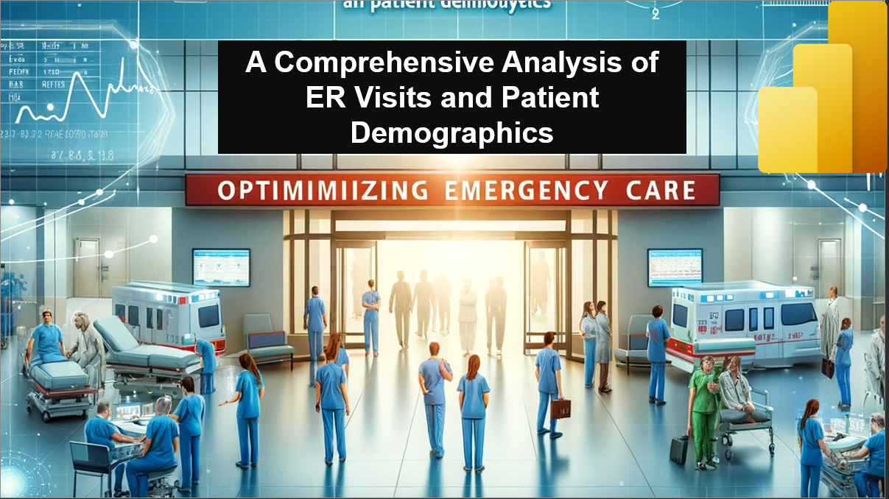
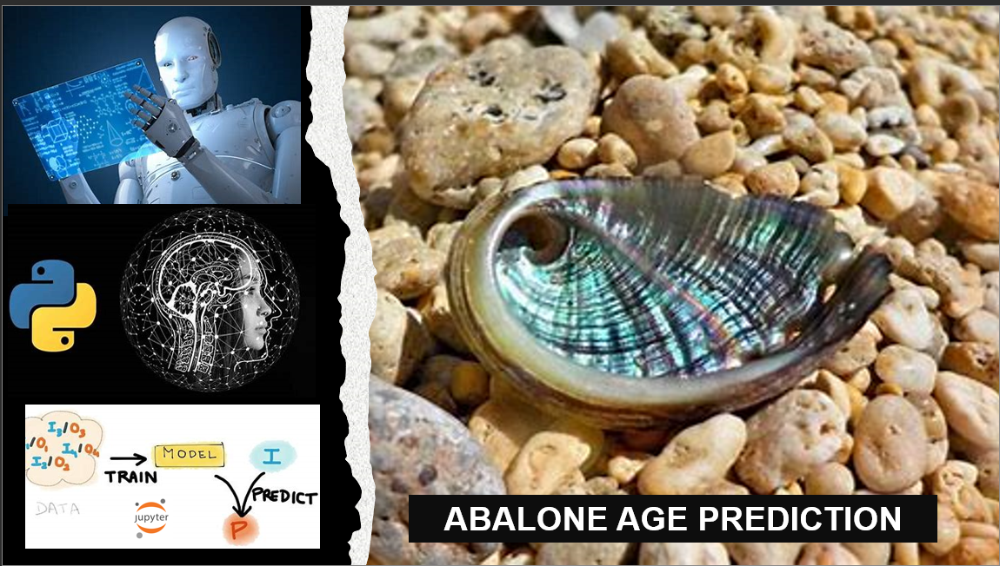
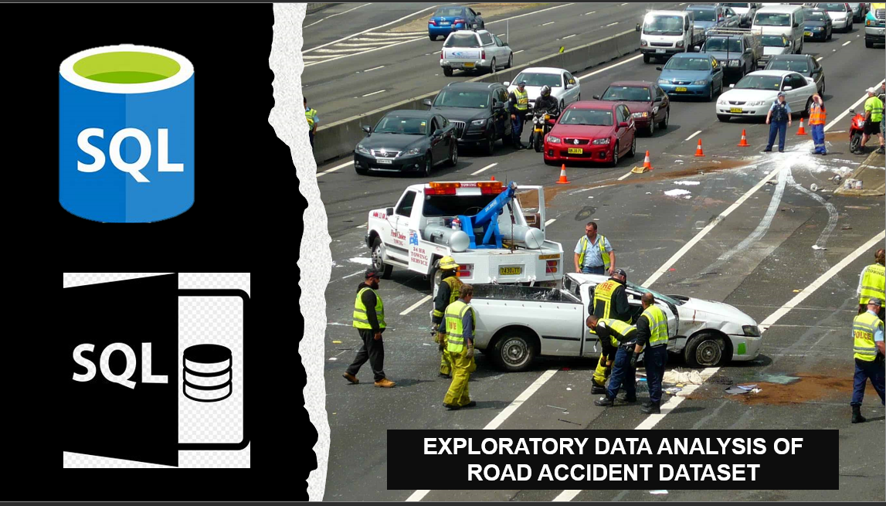
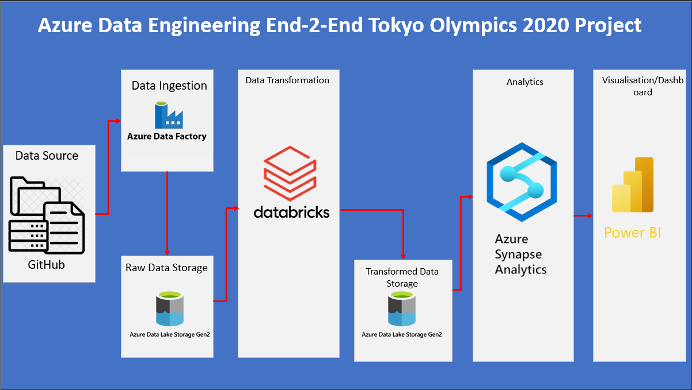
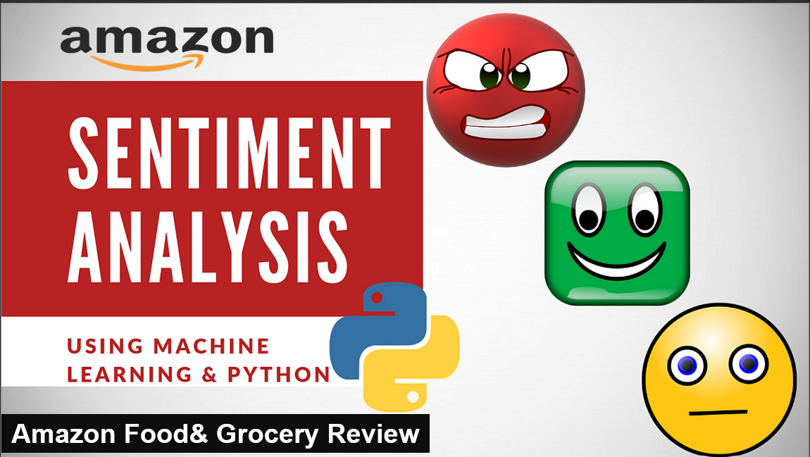
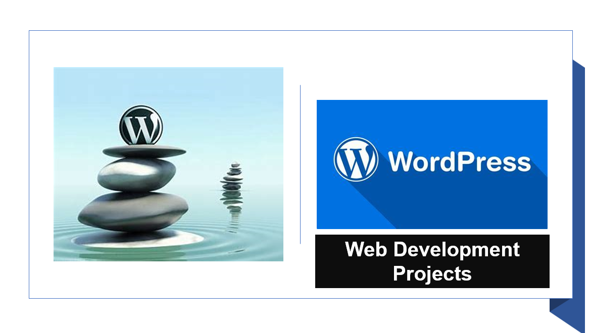

The "Sales and Ranking Dashboard" project is a sophisticated Power BI visual analytics tool designed to streamline the sales monitoring process for business decision-makers. The dashboard provides a multi-faceted view of sales performance metrics, including revenue, orders, and average transaction price (ATP).

The "Patients Emergency Room Visit Report" offers a comprehensive Power BI dashboard that presents critical data on patient visits to emergency departments.

In the Abalone Age Prediction project, the objective was to develop a machine learning model capable of predicting the age of abalones based on their physical measurements. Traditionally, determining the age of abalones involves a labor-intensive process of cutting the shell, staining it, and manually counting the rings under a microscope.

The EDA-Vehicle-Accident-Using-SQL project focused on conducting exploratory data analysis (EDA) on a vehicle accident database created using Microsoft SQL Server Management Studio (MSSMS). The project workflow involved importing CSV files into the MSSMS database as tables, creating a foundation for in-depth analysis.

In an era where data is pivotal to events, the Azure Data Engineering End-to-End Tokyo Olympics 2020 Project stands as a transformative approach to managing and extracting value from data at scale. Leveraging a comprehensive suite of Azure services, this project orchestrates a cohesive and powerful data pipeline, transforming raw data into actionable insights that drive strategic decision-making and enhance the Olympic experience for participants and viewers alike.

The Amazon Food and Grocery Review Sentiment Analysis project is an exploration and analysis initiative focusing on customer reviews and sentiments related to food and grocery products available on the Amazon platform. Leveraging the extensive and diverse customer feedback provided on Amazon, this project aims to delve into consumer preferences, product quality assessments, and industry trends within the food and grocery sector.

This portfolio showcases a collection of dynamic and responsive websites, each tailored to meet specific client requirements. The websites were built using a combination of WordPress and HTML, ensuring a versatile and scalable solution.